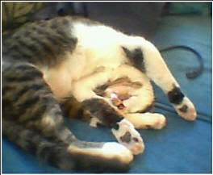

Recovered weblog entry
Ah, Sundays...

It was a welcome transition from the rest of the weekend. I won't go into great detail, primarily because I wouldn't want to relive the exhausting parts, even in my mind. Suffice it to say that Friday and Saturday were very, very odd.
Odd: Now that's a nice descriptor!
The picture up there; that's our cat. I will never, ever devote even a single page to the silly kitten, because I don't want to come off as a crazy nut who carries their cat in a backpack. But dang, that's a cool pose, and I hope he was dreaming about mice.
Or catnip. He likes that stuff.
I think he slept for like, 20 hours today. Right now, he's just cleaning himself, because all that slumber must have made him filthy. My brother told me to not feel sorry for him, ever: He said that cats have a knack at making themselves seem deprived and lowly. That said, Dobby is one of the best.
Enough about the silly cat. Wife is fine, house is fine. Car still runs great, though it sounds like a helicopter at lift-off. (literary licence: I've actually never heard a live helicopter, let alone one during lift-off) However, Wife and I feel that the Copter gives an accurate description of the sounds that it generates when we drive away.
Other than that, I delve into the coming week in happier spirits than the last, the promise of Friday being pay day does an amazing job of making me smile. And I should never forget that I have the best wife in the world.
By the way, we're into week 17 of the pregnancy now. That's what, 4 months now? Isn't this about the time that I should start preparing for the child? Probably. I wonder if he/she will ever read any of this...I'll be willing to bet that it will give a definite good look into my head during this time of transition.
This entry is turning quickly into blather. I really need to go to bed, anyway. Like I said earlier, it's been an odd weekend...